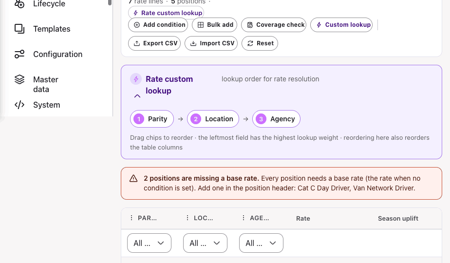
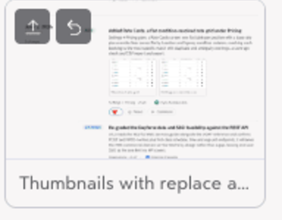
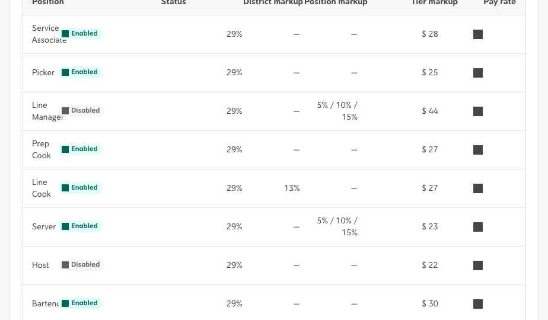
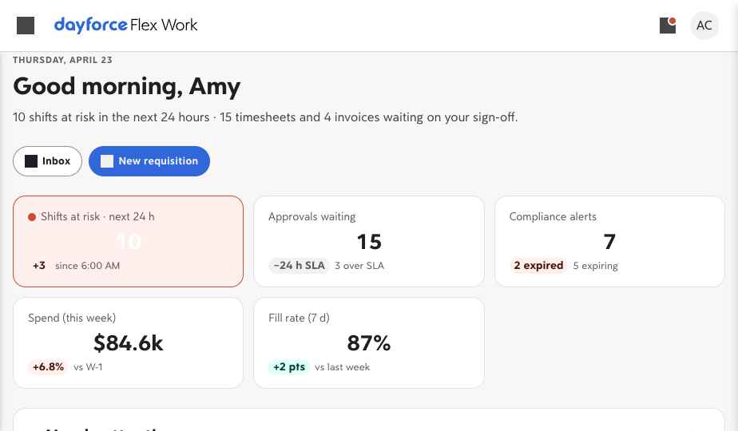

June 3, 2026
-
Remove
Moved the Booking Simulator out of the V2 app into the Rate Automation prototype
The Booking Simulator added earlier today now lives in the Rate Automation staging prototype, next to its rate cards grid, so it is no longer a Settings page in the V2 app; the Pricing area returns to Rate Cards alone.
-
Change
Let the Booking Simulator agency markup be a percentage or a fixed amount
The agency markup assumption now carries a percent / pound toggle: percent applies to the worker cost as before, while pound is a flat margin per hour, so cost-plus rate cards can be modelled directly.
-
Change
Trimmed the Booking Simulator assumptions to phase 1 scope
Removed the NI secondary threshold, the pension lower limit and the National Minimum Wage floor check from the Booking Simulator, since they are out of phase 1; employer NI and pension are now a flat percentage of NI-able pay and the unused standard-week assumption is gone.
-
Fix
Set the Booking Simulator overtime threshold to 40 hours a week
The default overtime threshold now starts at 40 hours a week rather than 48, so overtime at 1.5x is reached sooner; a one-time migration flips the previous 48-hour default for anyone who already loaded the simulator.
-
Add
Added a Booking Simulator under Pricing for end-to-end pay-to-bill
Settings → Pricing gains a Booking Simulator: pick the position, location, agency, parity and legal entity, the booking date(s) and shift time, and the worker's age, tenure and hours already worked this week, and it resolves the rate against the live Rate Cards grid then shows the full UK build-up — worker pay, WTR holiday pay, employer NI, pension, apprenticeship levy, the rate card's seasonal uplift, agency markup and VAT — with overtime, a National Minimum Wage floor check and an AWR parity hint, over an editable assumptions panel.
-
Change
Reworked the embedded Flex Work nav to the standard Dayforce module pattern
Inside the Dayforce shell, Flex Work now uses the standard embedded-module navigation: a docked left nav headed by the module name and a collapse control, with the active item shown as a pill with a left accent bar. The primary Dayforce navigation is no longer a persistent rail — it is summoned by the top-bar hamburger and slides in over the module nav with a scrim, matching the Profile module pattern. Standalone Flex Work is unaffected.
-
Add
Added an Engagement Type feature flag and surfaced it across intake and lists
A new Engagement Type flag group adds Assignment, Project and Statement of Work alongside the always-on Shift. When any is on, the requisition flow gains an Engagement type picker card right after Template / Import, and the Requisitions, Workforce, Timesheets and Invoices tables each gain an Engagement type column and filter. Workforce's Sourcing channel column is renamed to Supplier type. With every flag off, every surface renders as before.
-
System
Split the V1 track out into its own folder and changelog
Carved Flex Work V1 out of this V2 repo into a self-contained /v1 folder so the two tracks can be pushed independently and later diffed for the V2 requirements docs; forked the Rate Automation prototype in to seed the first V1 surface while the staging copy stays in prototype/ for the team, stood up v1/Flex Work V1 Changelog.html as the V1 source of truth, and documented the split in CLAUDE.md.
-
Change
Collapsed rate lookup into a single Rate custom lookup order
The rate grid no longer offers separate most-specific and field-priority strategies — the two resolved bookings the same way, so the toggle is gone and the toolbar chip and inline panel are now both labelled Rate custom lookup, with one reorderable field order where the leftmost field carries the highest weight.

Single custom lookup order -
Change
Made the rate cards screen responsive on narrow viewports
The toolbar, lookup panel, banners and modals now reflow on small screens, and each position header pins to the visible width so its base rate, season uplift and add-override controls stack and stay reachable while the condition columns scroll.
-
Change
Moved custom lookup into an inline field-priority panel
The Custom lookup button now toggles an inline panel under the toolbar instead of opening a modal; it shows the lookup strategy and a row of draggable numbered chips for the field-priority order, and reordering a chip also reorders the matching table column.
-
Change
Styled the season uplift percentage and amount toggle on the rate grid
The percentage and fixed-amount switch on each rate line now renders as a proper Everest segmented control with a highlighted active option, a bordered value field aligned to the rate input and the resolved uplift result shown inline, replacing the unstyled default buttons that wrapped awkwardly.
-
Add
Added screenshots to changelog entries, with replace and click-to-zoom
Entries can now carry one to three screenshots of the change so a reader can see the work without opening the prototype; thumbnails sit between the detail and meta and open a full-size lightbox with prev and next, a counter, and keyboard navigation. Screenshots are proposed by the author and any reader can override one in place — hover a thumbnail to replace it with their own image or revert to the proposed shot, saved per entry in the browser.

Thumbnails with replace and zoom
June 2, 2026
-
Add
Added Rate Cards, a flat condition-resolved rate grid under Pricing
Settings → Pricing gains a Rate Cards screen: one flat table per position with a base rate plus override lines across Parity, Location and Agency condition columns, resolving each booking to the most-specific match with duplicate and ambiguity warnings, a coverage check and CSV import and export.

Resolved rate grid 
Editing an override row -
Change
Re-graded the Dayforce data and SSO feasibility against the REST API
v0.2 reads the RESTful Web Services guide alongside the SOAP reference and confirms POST and PATCH writes plus first-class schedule, time and org-unit endpoints; it reframes the VMS commercial domain as Flex Work's by design rather than a gap, leaving end-user SSO as the one limit no API covers.
-
Change
Reworked the embedded Flex Work nav to the standard module pattern
In the embedded Dayforce shell, the Flex Work nav now docks as a standard module sidebar with a module header, a collapse control and a left accent bar on the active item, while the top-bar hamburger summons the main Dayforce nav as an overlay above it.

Embedded module shell -
Add
Added an Engagement Type feature flag and column
A new Engagement Type flag group (Assignment, Project, Statement of Work) adds an intake picker after Template / Import and an Engagement Type column plus filter across the requisitions, workforce, timesheets and invoices tables; the workforce Sourcing channel column is renamed to Supplier type.
-
Change
Capitalized Job Assignments on the requisitions list
The requisitions column header and the job filter now read Job Assignments, matching the Dayforce feature name instead of sentence case.
June 1, 2026
-
Change
Cleaned up the pricing configuration detail header
The status tag now hugs its label instead of stretching the card, the details moved into a collapsed Everest section with a label-value grid matching the other detail sections, versions opens from a proper secondary button, and the version statuses render as Everest tags.
-
Fix
Sized the pricing table rows to the Everest table text scale
The configuration list rows inherited the 16px page base and read too large; body cells now use the canonical 14px Everest table text, with the configuration name in demibold high-emphasis.
-
Add
Added pagination to the pricing configurations table
The configurations list now uses the shared Everest pagination control with a result summary, rows-per-page, and page navigation, and resets to the first page when the search or status filter changes.
-
Change
Rebuilt the pricing configurations list on the Everest table
The list dropped its bespoke search, status dropdown, result count, and table chrome for the shared Everest list surface: the standard search input, a status filter chip with its popover, the canonical header row with sort affordances, and status tags rendered as Everest pills.
-
Change
Switched the pricing view tabs to the Everest tabs group
The configurations and drift report tabs used a bespoke pricing-only style; they now render through the shared Everest tabs component, matching the tab strips on requisitions, invoices, and timesheets.
-
Change
Moved the new configuration action into the pricing omnibar
The pricing configurations list dropped its in-page title and subtitle, which duplicated the omnibar header, and the new configuration button now sits in the omnibar alongside reload, matching the other list surfaces.
-
Fix
Fixed the missing icon on the temp-to-perm conversion section
The temp-to-perm conversion accordion and its banner referenced an icon name that does not exist in the icon set, so the avatar rendered blank. Both now use the person-authorize icon, matching the rest of the worker detail accordions.
-
Fix
Aligned the suppliers row actions menu to the right edge
The supplier table grid declared a stray quality column and always rendered an empty supplier-types cell, so the row-actions kebab landed short of the right edge and out of step with the other tables. The grid track count now matches the rendered cells and the kebab sits 20px from the row edge, matching the Timesheets and Invoices pattern.
-
Add
Extended rate card import and export to every org tier and agency contracts
The CSV export and import flow now runs at every level, not just the global card: any org node (Corporate, Region, District, Site, Department) and each agency contract can download their effective rates and re-import in bulk. Org-node imports write per-level overrides and agency imports set the all-locations base pay, with the same update, review and add-only conflict strategies.
-
Add
Added rate cards to sites and showed where each rate is inherited from
Site detail pages were missing the rate card accordion that other org tiers already had, so sites can now set their own base-pay overrides. Every inherited rate now names its source, for example inherited from a parent region rather than just labelled inherited.
-
Remove
Removed the peak season window card from rate cards
Dropped the shared season name and date-range card from the rate card editor. The per-job season uplift still lives in the base pay table.
-
Add
Added rate card import and export with conflict strategies
The tenant rate card in Settings → Jobs can now be exported to CSV — pick which positions and whether to emit base pay (pre-parity), the peak rate (post-parity) or both, with optional season-uplift columns — and re-imported. On import the user chooses how conflicts resolve: update matching rows from the file, review each difference and pick the value to keep, or add only positions not already on the card.
-
Add
Added versioned rate cards with org inheritance and agency overrides
Settings → Jobs now holds a tenant-level rate card that sets base pay per job, with an optional named peak-season uplift expressed as either an absolute amount or a percentage. Every org tier — Corporate, Regions, Districts, Sites and Departments — inherits the card and can override any row, and agency contracts can override base pay per position scoped to one location or all locations. New cards are saved as versions with an effective date so future rates can be scheduled ahead of time.
-
Add
Let agency admins assign workers to open work assignments from a requisition
On an agency tenant the requisition Work assignments list now shows an Assign action with the assign-worker flow on upcoming assignments that still have open positions, and a read-only View on past or fully filled ones, while every row is labelled filled, partially filled or unfilled with a position count, fill bar and colour accent so staffing gaps are easy to scan. Fill state is read from the same booking store the schedule uses, so assigning here updates both.
-
Add
Added requisition data for every billing basis
The Requisitions list now carries rows for all five billing bases — Hourly, Weekly, Monthly, Fixed and Milestone — each paired with a coherent engagement type and time capture, so the Billing basis column and filter return real matches instead of resolving every row to Hourly.
-
Add
Added timesheet data for every engagement type
The Timesheets list now carries Assignment, Project and Statement of Work rows alongside Shift — each spanning open, pending approval, review and closed — so the default Open tab no longer reads as shift-only, and on high-volume tenants the synthetic rows that pad the list now each get their own reference number, worker, captured hours and milestone instead of repeating one seed.
-
Change
Extended the MSP tenant filter to every org structure type
When viewing as MSP, the Tenant filter now appears on every org tier — Corporate, Regions, Districts and Departments — not just Sites, so a multi-program MSP can scope any level of the organization to a single client. The non-Sites segments previously had no filter bar for the tenant chip to attach to; they now render one that stays hidden for non-MSP users.
-
Change
Hid the Agency Pro feature flags on non-agency organizations
The Agency Pro group in Settings → Feature Flags — both the Agency Pro flag and Automatic worker invitations — now renders only on agency-kind tenants, where the capabilities actually apply. On enterprise buyer organizations the group is filtered out entirely instead of offering a toggle that did nothing.
-
Change
Added user and action filters plus expandable detail to every activity log
The shared activity-log timeline that backs the Logs accordions across requisitions, suppliers, workforce, locations, schedule, and supplier distribution now carries two filters — by user and by action — and a per-row disclosure that opens a structured detail panel with the full timestamp, user, action, target, and note. Filters appear only when a log spans more than one user or action.
-
Change
Replaced the requisition Distribution tab with Workforce distribution for Agency Pro
On a staffing-agency tenant on the Pro plan the requisition detail no longer shows the buyer-facing Distribution accordion — a supplier priority list that means nothing when the tenant is itself the supplier — and instead shows a Workforce distribution accordion that inherits the agency-wide Automatic worker invitations rule from Settings → Configuration and can be overridden for that requisition only. Buyer tenants are unchanged.
-
Add
Added automatic worker invitation strategies for agency tenants
A new Agency Pro flag, Automatic worker invitations, lets an agency choose how an accepted requisition reaches its bench — all at once, staggered in waves on a fixed interval that auto-stops once filled, or smart allocation that ranks the bench by worker score and invites the strongest first — set as an organization default in Settings → Configuration and overridable per requisition on the worker-invite panel.
May 30, 2026
-
Remove
Removed the count badges from supplier detail sections
The accordion sections on the supplier detail page no longer show the item-count badge next to their titles, since the numbers added noise without aiding the read.
-
Change
Aligned the worker Details section with the Everest detail layout
The worker profile Details accordion now renders Contact information and Identification through the shared dg-info card used by Supplier, Requisition and Location details, replacing the bespoke field list so every detail page reads the same.
-
Remove
Removed the redundant Agency pill from the worker hero
The worker profile header dropped the Agency pill next to the supplier name, since the supplier chip already identifies the sourcing relationship.
-
Change
Collapsed all detail-page accordion sections by default
Every accordion section across the Requisition, Supplier, Workforce, Location, SOW, Professional and Contractor detail pages now opens collapsed so each page starts as a scannable list of sections; the per-section defaultOpen flags are ignored app-wide.
-
Add
Gave the supplier invoices section an Everest empty state
The Invoices section on the supplier detail page now shows the standard Everest empty state with the CardMoney illustration, a title and one line of context, instead of the single dashed line of text, matching the requisition detail invoices empty state.
-
Remove
Removed the Quality column from the Suppliers list
The Suppliers list table no longer carries the Quality column or its column-customizer entry; the supplier scorecard on the detail page still shows the quality rating.
-
Change
Removed the Fill rate progress bars from the Suppliers list
The Fill rate column on the Suppliers list now shows the plain percentage in regular-weight text instead of a colored progress meter, matching the Time to fill and No-show columns.
-
Fix
Fixed nav icons that stayed grey when their tab was selected
Ten icon SVGs (including Policies, Jobs, Lifecycle, Configuration, Users and Budgets) had hardcoded grey fills instead of currentColor, so they did not recolor to blue when their global-nav tab was active; all icons now inherit the active colour like the rest.
-
Fix
Fixed the Workforce table layout after removing Supplier type
The Workforce grid kept a phantom column track for the removed Supplier type column, shifting every header and cell left by one; the track is gone, Job assignments now fills the available space, and Shifts hugs its content.
-
Change
Changed detail-page section hover to a card lift
Collapsed accordion sections on the detail pages now lift with a backdrop shadow on hover instead of tinting the header background; open sections show no hover treatment. Applies globally to every detail-page accordion across Requisitions, Suppliers, Workforce, Locations and SOW.
-
Change
Swapped the Workforce icon to the Employees group glyph
The Workforce module now uses the Everest Employees icon — a group of three people — in the global nav, the Workforce page header, Analytics, Reports, Roles, the Help Center and the location workforce card, replacing the single-person glyph.
-
Remove
Removed the Supplier type column from the Workforce list
The Workforce table dropped the Supplier type column that sat between Supplier and Job assignments; the remaining columns reflow to fill the space.
-
Change
Streamlined the Reports header into the search row
Removed the Reports page title and description and moved the New report button onto the right of the search row, sized to the Everest 40px primary-button proportions so its label and icon match the rest of the app.
-
Change
Switched the Organization scope picker to Everest tabs
The Corporate, Regions, Districts, Sites and Departments segmented control became an Everest Tabs group sitting directly below the omnibar like the rest of the list pages, and the toolbar now puts search on the left with the icon actions on the right.
-
Change
Moved Reports search into a toolbar above the table
The Reports search left the table filter bar and now sits on the left in a toolbar above the table, matching the Suppliers and Invoices list pages; the Type and Source quick filters stay in the table filter bar.
-
Change
Trimmed the Reports table to report, type and source
The Reports list dropped the Status and Fields columns and the Status filter, the report type now shows as a plain outline chip without a leading icon, and report names render in regular weight so they read as records rather than repeating the header style.
-
Change
Aligned the Reports table with the shared Everest list table
The Reports library now uses the same Everest table the Workforce and Suppliers lists use — a white regular-case header row, Type, Source and Status quick-filter chips in the filter bar, and Everest pagination at ten rows per page instead of an in-table vertical scroll. The pin icon and the description line under each report name were removed so each row is a single clean line.
-
Change
Rebuilt the Reports library as a filterable table
The Analytics Reports tab now lists every report in one table with Report, Type, Source, Status and Fields columns instead of category card groups; the My reports, Standard, Recent and Scheduled scopes are now filters over that table. Creating a report picks its base module from a single Type dropdown rather than the old button grid, and a report being scheduled now shows as a Status value on its row instead of a separate scope and header button.
-
Change
Moved Analytics top tabs onto the shared Everest tab strip
The Metrics and Reports tabs now use the canonical Everest tab component the list pages share, so they match the rest of the app with a bold active label and a neutral underline indicator instead of the one-off Analytics tab styling.
-
Change
Dropped icons from the Analytics Metrics and Reports tabs
The Analytics top tab strip now shows text-only labels for Metrics and Reports, removing the leading icons so the tabs read as a plain label switch.
-
Change
Folded add tab and add widget into one dashboard add menu
The tab-bar add button now opens a small menu with Add new tab and Add new widget instead of going straight to the create-tab dialog, and the standalone Add a widget card was removed from the Overview column since browsing the widget library now lives in that menu. Add new tab opens the same create-tab dialog and Add new widget opens the widget library for the current tab.
-
Fix
Forced dashboard Shortcuts icons to render in primary blue
Two Everest source glyphs in the dashboard Shortcuts card — the compliance shield and the budget money-bag — ship with a hard-coded neutral fill instead of currentColor, so they showed as dark grey while the other shortcut icons were blue. A scoped fill rule on the shortcut icon wrapper now forces every glyph in the card to inherit the primary-blue color, so the row reads as one consistent set.
-
Change
Moved the create-tab control to the dashboard tab bar actions
The create-a-new-tab button left the left end of the dashboard tab strip and now sits on the right with the other tab-bar actions, restyled as a standard circular icon button that matches the reload control beside it. It still opens the same create-tab dialog and keeps its open-state and accessibility wiring.
-
Change
Moved Compare rates into the Suppliers omnibar More menu
The standalone Compare rates button left the Suppliers list toolbar and now sits at the top of the omnibar More menu, with the Everest Scale icon, ahead of a divider and the standard list actions. The change is scoped to the Suppliers omnibar so the shared toolbar menu used by other list pages is untouched.
-
Fix
Stopped the Workforce table wrapping onto a second line
The Workforce list header and rows rendered the optional columns — Cadence, Rate, Engagement type, Billing basis, Time capture, Supplier types — from per-user column visibility alone, which returns visible for any column the user has not explicitly hidden. With the matching feature flag off, those cells had no grid track and spilled onto a second row, so a worker record no longer sat on one line. Each optional column now renders only when its feature flag is on, mirroring how the column manifest and filter chips are already built, so every row keeps to a single line in the standard Everest table pattern.
May 28, 2026
-
Add
Made worker assignment type-aware across every engagement type
Implemented all tasks from the worker-assignment parity doc on top of the existing surfaces. New shared lib
pages/assignment-engine.jsx(window.AssignmentEngine) owns mode branching (allocate / submit / propose), supplier-type compatibility, a credential pre-check that reusesgetCredentialingForWorker, an availability / double-booking guard, theContingentEngagementstore, the work-order plus onboarding status machine, and the buyer-to-worker shift-offer loop.pages/assign-worker-panel.jsxnow branches oncfg.engagementType: Shift allocates instantly with compliance and availability chips, a compat filter, bulk allocation and a recurring-series toggle; Assignment submits a candidate that walks an in-panel pipeline (issue work order, supplier accept, onboarding activity-items gate, activate) with a from-workforce / new-candidate tab; Project and SOW add a named resource. Wired the satellites:schedule.jsxpasses booking context for the double-booking guard,schedule-list-view.jsxbulk “Assign workers” opens the panel in bulk mode,worker-mobile.jsxHome shows a shift-offer accept card, the Project propose-team modal validates blended cost against the budget envelope and shows per-candidate credentials, and the SOW Resources accordion gains an add-resource action. Flipped the parity doc to v0.2 — 31 of 32 tasks shipped (consolidated-worker dedup intentionally not chased). -
Add
Wrote worker-assignment parity tasks segmented by engagement type
New competitor doc at
Competitor Comparisons/Worker Assignment by Engagement Type — Parity v0.1.htmlreviews how an agency places a named worker for each engagement type and grades the gap against the right benchmark — frontline Shift against JoinedUp, professional Assignment / Project / SOW against Fieldglass and Vndly. 32 tasks across a shared spine plus one section per type, each anchored to an existing page, model, or data object (a "Reuse" row) so parity lands with minimal new architecture; the keystone is makingpages/assign-worker-panel.jsxbranch oncfg.engagementTypeoff the existing matrix, with Assignment — today borrowing the instant shift picker — flagged as the widest gap. Reuses thepp-*parity-doc idiom from the Project engagement-type doc; no new top-level CSS file. -
Add
Wired three engine consumers — rate progression, rate-benchmark analytics, and a documented preview endpoint
Carried the rate engine into its downstream readers. The agency rate-progression accordion (
pages/worker-tenure.jsx) now derives its milestones from the bound pricing configuration’s tenure-band rule and computes pay + bill at each throughcomputeBillRate, replacing the static four-stopAT_TENURE_SCHEDULE— edit the band in Settings → Pricing and the milestones change with it. The Rate benchmark analytics report (su-ratecardinpages/analytics-reports.jsx) now averages the engine across each supplier’s contract positions and derives markup from the engine’s pay-to-bill spread, instead of reading a frozen_sc.rateAvgscorecard number — closing the drift between what the rate-card shows and what the report shows. And the engine is now documented asPOST /rate-engine/previewin a newapi-docs-spec-ext-17.js(wired intoFeature Audits/Flex Work API Reference.html), returning the same{ pay, components[], bill, thresholds }shape the in-product engine produces, with registeredRateEnginePreviewandRateComponentschemas. Flipped three more tasks onRate Engine Recommendations v0.1.html(now v0.4) to Shipped — 9 of 22 done.
Promoted the staged rate reducer into a single canonical engine function. pages/supplier-contract.jsx now exports computeBillRate(row, config, ctx) → { pay, components[], bill, thresholds }, where components[] is the ordered, running-subtotalled, visibility-tagged build-up every downstream surface reads instead of re-deriving the math. Five engine-layer recommendations landed with it: explicit stacking order per rule and a markup basis selector (pay vs subtotal vs running); rate-types at the row level (factor, coefficient, and derived rows that base off a named sibling × a factor, so holiday / night / weekend stop being authored as duplicates); component visibility (internal markup + tax layers hidden from the agency-side popover via componentsForRole); and program threshold enforcement — configs carry { ceilingBill, marginFloor } and the engine returns thresholds:{ breached, by }, which the breakdown popover renders as an inline warning when a row exceeds the ceiling or falls below the margin floor. The breakdown popover now reads the full chain and filters internal layers for the agency view. Flipped six tasks on Rate Engine Recommendations v0.1.html (now v0.3) to Shipped: parameterise structure, computeBillRate, breakdown-reads-engine, agency role-aware popover, threshold enforcement (plus the previously shipped binding).